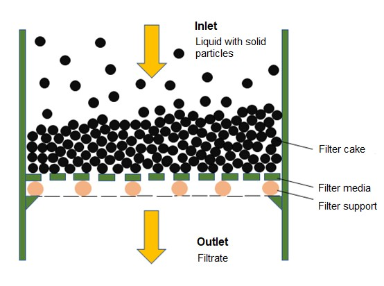
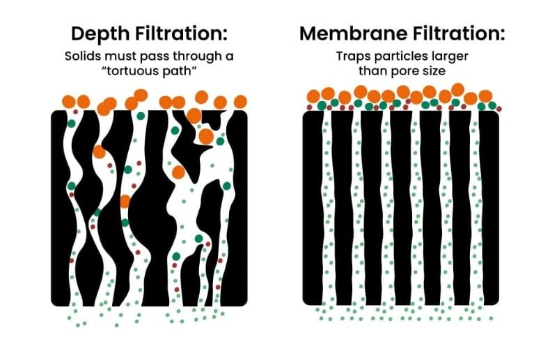
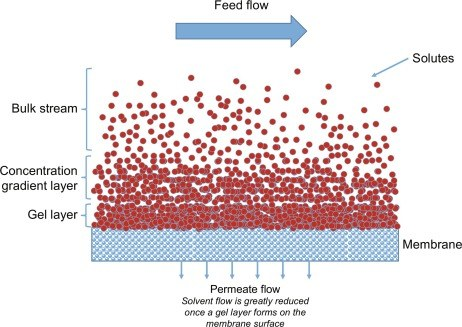
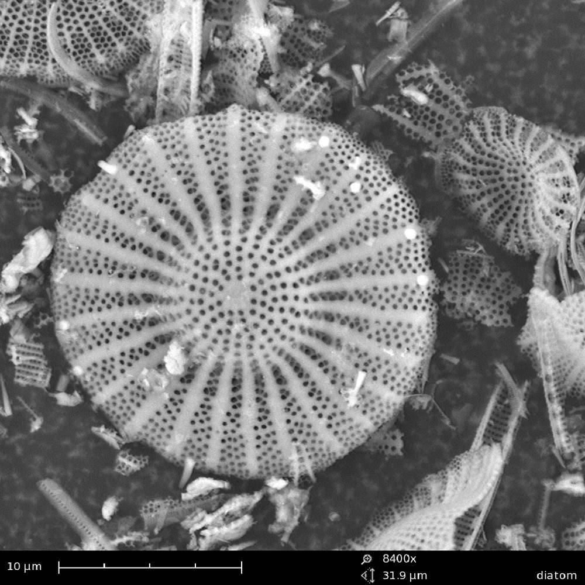
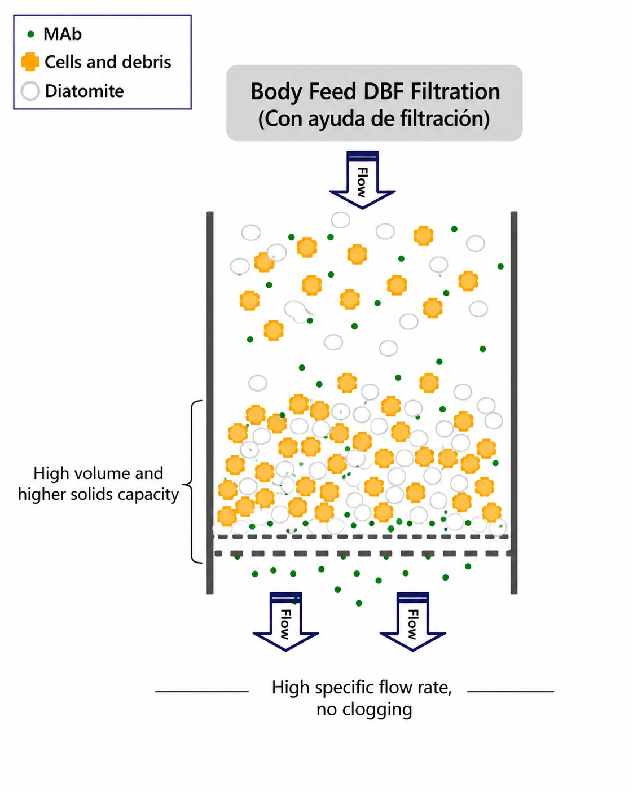

Universidad de los AndesIngeniería Química y de Alimentos
IQYA-2031 · Semana 09
Filtración
Teoría, ciclo de operación y equipos de separación sólido-líquido. Filtración de profundidad y winterización.
CursoProyecto de Operaciones Unitarias
Proyecto del semestrePlanta de aceite esencial de cítricos
Periodo2027-10 · Semana 9
Semana 9 · Módulo 6
Objetivos
01Distinguir los mecanismos de filtraciónFiltración con torta (superficial) vs. clarificación o filtración profunda
02Modelar el flujo con la Ley de Darcy y las resistencias en serieTorta (Rc=αw) y medio filtrante (Rm); compresibilidad de la torta
03Analizar el ciclo: presión constante y caudal constanteCon un simulador interactivo del ciclo real de un filtro
04Seleccionar el equipo adecuadoFiltro prensa, filtro rotatorio de vacío y decantadora centrífuga
05Dimensionar un filtro de profundidadRetención, caída de presión limpia y cambio de cartucho; la winterización
En su planta la filtración aparece en la winterización: el aceite del florentino se enfría a 5-10 °C y pasa por un filtro de profundidad, que la Bitácora 3 pide escoger y dimensionar.
Fundamentos
¿Qué es filtrar?
Separar partículas sólidas de un fluido haciéndolo pasar a través de un medio poroso.
Definición
Fundamentos de la filtración
La filtración es una de las operaciones unitarias más antiguas y fundamentales de la ingeniería química: separar partículas sólidas de un fluido (líquido o gas) haciéndolo pasar a través de un medio poroso.
Escala ambiental
Aguas y minería
Tratamiento de aguas residuales a gran escala; procesos mineros y metalúrgicos.
Alimentos
Producción y proceso
Clarificación de jugos, cervezas y aceites; recuperación de sólidos valiosos como cristales de azúcar o almidón.
Farma & bio
Pureza y esterilidad
Purificación estéril de fármacos; bioprocesos y cosecha de biomasa.
Dos objetivos posibles y opuestos: a veces el producto valioso es el sólido (la torta), a veces es el líquido clarificado (el filtrado). El objetivo define el equipo.
Mecanismo 1 de 2
Filtración con torta (cake filtration)
Mecanismo dominante para suspensiones con alta concentración de sólidos (típicamente > 1 % en peso).
Los sólidos se acumulan en la superficieSe depositan sobre el medio filtrante, no dentro de él.
Forman una capa porosa: la tortaCrece con el tiempo y se vuelve el verdadero medio de filtración.
Filtra mejor… pero opone más resistenciaEl filtrado sale limpio por el soporte inferior.

La suspensión entra por arriba; la torta se forma sobre el medio y el filtrado sale por abajo.
Mecanismo 2 de 2
Clarificación o filtración profunda (depth filtration)
Se aplica a suspensiones muy diluidas (usualmente < 0,1 % en sólidos), donde el objetivo es un líquido extremadamente claro.
No se forma torta visibleLas partículas finas son atrapadas dentro de la matriz porosa.
Camino tortuosoQuedan retenidas por choque e intercepción a lo largo del lecho.
Vida útil limitadaTermina cuando los poros internos se saturan; se regenera o reemplaza.

Filtración profunda (camino tortuoso) frente a membrana (corte por tamaño de poro).
Cómo se alimenta el filtro
Filtración frontal vs. tangencial (cross-flow)
Frontal (dead-end)
El flujo choca de frente
Todo el líquido cruza el medio. La torta crece sin parar y el caudal cae: hay que detener y limpiar.
Tangencial (cross-flow)
El flujo barre la superficie
La corriente circula paralela al medio y arrastra los sólidos, limitando la torta. Base de las membranas.

En flujo tangencial, la corriente barre la membrana y controla la capa de gel.
El modelo físico
De Darcy a las ecuaciones de diseño
Flujo a través de un medio poroso, resistencias en serie y compresibilidad de la torta.
El punto de partida
Ley de Darcy
El flujo de un fluido a través de un medio poroso se describe con la Ley de Darcy:
Q=dtdV=μLKAΔP
Q: caudal volumétrico
ΔP: diferencia de presión aplicada
A: área de filtración · L: espesor del medio
μ: viscosidad · K: permeabilidad del medio
El gradiente de presión impulsa el flujo a través del medio poroso.
Reescribiendo Darcy
Flux, resistencia y la analogía con Ohm
Expresando Darcy con el flux (J=Q/A) y la resistencia (Rm=L/K), la filtración se lee como un circuito: un potencial vence una resistencia y produce un flujo.
Ley de OhmCircuito eléctrico
I=RV
I: corriente
V: voltaje (potencial)
R: resistencia (fija)
↔
FiltraciónFlujo por un medio poroso
J=μRmΔP
J: flux (corriente)
ΔP: presión (potencial)
μRm: resistencia al flujo
La diferencia clave con un resistor: en filtración la resistencia no es fija: la torta la hace crecer con el tiempo (Rc=αw). Por eso, aun con ΔP constante, el flux cae. Ese es el corazón del diseño.
Dos barreras al flujo
Resistencias de la torta y del medio filtrante
En la filtración con torta el fluido vence dos resistencias en serie:
J=AQ=μ(Rc+Rm)ΔPtotal
Medio filtrante
Rm: constante
Propiedad fija del equipo (tela, malla, membrana).
Torta
Rc=αw: creciente
w: masa seca por área; α: resistencia específica. Domina rápidamente.
Modelo de resistencias en serie: Rtotal=Rc+Rm.
Cuando α no es constante
Compresibilidad de la torta
Muchas tortas, de partículas finas, orgánicas o floculadas, son compresibles: al subir la presión, las partículas se deforman, la estructura se compacta y αaumenta.
α=α0(ΔPc)s
s=0: incompresibleArena, diatomita. α no cambia con la presión.
0<s<1: compresibleLa mayoría de las tortas reales.
s≈1: altamente compresibleHidróxidos metálicos, biomasa bacteriana. La levadura ronda s≈0,7.
Por eso más presión no siempre da más caudal: en una torta compresible, subir ΔP también sube α.
Al aumentar la presión la torta se compacta y pierde porosidad.
Ecuaciones de diseño
El ciclo de operación
Presión constante, caudal constante y el ciclo real de un filtro industrial.
Modo 1
Filtración a presión constante
Típica del filtro prensa y equipos batch. Con w=csV/A y ΔP fijo, se integra desde t=0,V=0:
A1dtdV=μ(αcsV/A+Rm)ΔP
V/At=(2ΔPμαcs)AV+ΔPμRm
Recta de trabajo
Es y=mx+b al graficar V/At vs. AV: la pendiente da α y el intercepto da Rm.
A ΔP fijo, al crecer la torta el caudal Q=dV/dt disminuye. → Compruébelo en el simulador.
Modo 2
Filtración a caudal constante
Frecuente al inicio del ciclo con una bomba de desplazamiento positivo (Q=cte). Con V=Qt se busca cómo sube la presión:
ΔP=μ(AQ)(αAcsV+Rm)
ΔP=(A2μαcsQ2)t+AμQRm
Presión lineal en el tiempo
Para sostener Q, la presión crece linealmente a medida que la torta se acumula a ritmo constante.
Pero la presión no puede subir sin límite: choca con la tolerancia del equipo. → Mírelo en el simulador.
Recurso interactivo
Simulador: el ciclo de filtración
3
2
1
6
ΔP (presión)
—
Q (caudal)
—
Fase 1 · caudal constante
ΔPQ
Uniendo los dos modos
El ciclo real de operación
1Caudal constanteLa bomba arranca a caudal fijo. La resistencia es baja y la presión sube linealmente hasta acercarse al límite del equipo.
2Presión constanteAl llegar a Pmaˊx ya no se puede subir más: se mantiene fija y el caudal empieza a caer según la torta engrosa.
3Lavado y limpiezaCuando el caudal cae a un nivel antieconómico, se detiene, se lava la torta, se abre el equipo y se retira para el siguiente ciclo.
El diseño óptimo minimiza el tiempo total del ciclo (filtración + lavado + limpieza) para maximizar la productividad del equipo.
Del laboratorio al diseño
Determinación experimental de α y Rm
α y Rm dependen de cada suspensión y se miden con un ensayo a presión constante:
1 · Ensayo a ΔP conocidaFiltrar la suspensión real a presión fija.
2 · Registrar V vs. tVolumen de filtrado acumulado en el tiempo.
3 · LinealizarGraficar t/(V/A) (eje y) vs. V/A (eje x).
4 · Regresión linealEl resultado debe ser una recta.
Montaje de filtración al vacío: bomba, trampa de seguridad, portafiltro y receptor.
Leyendo la recta
De la regresión a los parámetros
La recta t/(V/A) vs. V/A entrega directamente los parámetros de diseño:
Pendiente:m=2ΔPμαcs⇒α
Intercepto:b=ΔPμRm⇒Rm
Conociendo μ, ΔP y cs (medido aparte), se despejan α y Rm.
Para la compresibilidad s, se repite el ensayo a varias presiones y se ajusta α=α0(ΔPc)s.
Ayudas de filtración
Mejorando la filtrabilidad
Cuando la torta es fina, coloidal o compresible, se le añade estructura.
Materiales comunes
Ayudas de filtración
Materiales granulares, porosos e incompresibles que se añaden para dar estructura a la torta cuando las partículas son muy finas, coloidales o compresibles.

Tierra de diatomeasKieselgur. Esqueletos silíceos de diatomeas: enorme porosidad.Granular · Poroso · Incompresible
CelulosaFibras que arman una malla abierta; libre de sílice.Fibroso · Poroso · Incompresible
Estrategia 1
Pre-capa (precoat)
Antes de iniciar el proceso se hace pasar una suspensión de agua + ayuda de filtración por el filtro.
Forma una capa protectoraUna fina pre-capa se deposita sobre el medio filtrante limpio.
Evita el cegamientoImpide que las partículas finas taponen el medio.
Superficie de filtración idealBase uniforme y fácil de desprender al final.
La pre-capa protege el medio y da una superficie de filtración uniforme.
Estrategia 2
Body feed (dosificación en línea)
La ayuda de filtración se mezcla directamente con la suspensión antes de bombearla al filtro, y se incorpora a la torta a medida que se forma.
Estructura
Crea una torta abierta, rígida y porosa que no se compacta.
Efecto
Reduce la resistencia específica α y la compresibilidad s, aumentando el flujo a lo largo del ciclo.

El body feed arma una torta porosa que no se compacta.
Equipos
Del modelo al equipo real
Filtro prensa, filtro rotatorio de vacío y decantadora centrífuga.
Equipo batch por excelencia
Filtro prensa de placas y marcos
El video muestra un filtro prensa de cámaras con membrana automático (3D): placas rebajadas en lugar de marcos, con el mismo ciclo. Ver en YouTube
El equipo de filtración por lotes más común y versátil de la industria.
Un paquete de placas verticales y marcos huecos se prensa fuertemente (sistema hidráulico o de tornillo); una tela filtrante cubre cada placa. Opera a altas presiones (hasta ~15 bar).
1CierreEl paquete se sella herméticamente.
2FiltraciónSe bombea la suspensión; se forma la torta.
Para procesos que requieren operación continua y a gran escala.
Un gran tambor horizontal cubierto por el medio filtrante gira lentamente, con su parte inferior sumergida en el tanque de suspensión. El interior está segmentado y conectado a vacío.
1FormaciónLa sección sumergida forma torta por vacío.
2LavadoAl emerger, aspersores lavan la torta en el giro.
3SecadoEl vacío arrastra aire por la torta y la seca.
4DescargaUna cuchilla la desprende cada vuelta.
Ventaja
Operación totalmente continua y automática, ideal para gran volumen.
Desventaja
Fuerza impulsora limitada al vacío (ΔP<1 bar).
Cuando la presión no basta
Decantadora centrífuga
Cuando los sólidos son muy finos o gelatinosos, cegarían cualquier medio filtrante, la separación se hace por sedimentación acelerada, no por filtración: la fuerza centrífuga (miles de veces la gravedad) separa por diferencia de densidad.
Sin medio filtranteBowl de pared sólida: no hay torta que atraviese una tela, así que no se ciega.
Tornillo transportador (scroll)Gira a velocidad ligeramente distinta y arrastra los sólidos sedimentados hacia la salida.
Totalmente continuaAlimentación, clarificado y sólidos salen sin parar el equipo.
Principio de operación de una decantadora centrífuga. Ver en YouTube
Balance y usos
Decantadora: ventajas y aplicaciones
Ventajas
Continua y robusta
Operación continua y automática
Alto caudal; maneja lodos y finos
No hay medio que se ciegue
Puede separar 3 fases (sólido-agua-aceite)
Desventajas
Costo y humedad
Torta más húmeda que un filtro prensa
Alto consumo energético
Desgaste por abrasión y ruido
Aplicaciones
Lodos y bioprocesos
Deshidratación de lodos (PTAR)
Alimentos: almidón, aceite, jugos
Cosecha de biomasa (paso previo)
Frente a la centrífuga filtrante (canasta perforada, para cristales), la decantadora es de pared sólida: separa por sedimentación, ideal justo para los finos y lodos que cegarían un filtro.
La decisión de diseño
Criterios para seleccionar el equipo
No existe un «mejor» filtro; existe el filtro adecuado para una aplicación específica.
Si su suspensión es…
Y su objetivo es…
Considere…
Concentrada, por lotes
Una torta muy seca
Filtro prensa
Concentrada, gran volumen
Operación continua
Filtro rotatorio de vacío
Muy diluida (< 0,1 %)
Un líquido ultra-claro
Filtro de cartuchos / profundo
Finos, gelatinosos o lodos
Deshidratar en continuo
Decantadora centrífuga
Muy compresible / gelatinosa
Mejorar el flujo
Filtro prensa + ayuda filtrante
Aplicación industrial
Cosecha de células en biotecnología
Separar la biomasa (levaduras, bacterias) del caldo de fermentación es un paso crucial, y un desafío de filtración mayúsculo.
El problema
Las células son partículas muy pequeñas (1-10 µm) y biológicas, con resistencia específica α altísima y compresibilidad alta (0,6≤s≤1: levadura ≈ 0,7; bacterias cerca de 1).
La torta se compacta apenas se aplica presión y bloquea casi por completo el flujo.
dtdV∝αΔP=α0ΔP1−s(Rmdespreciable)
Con s≈1, subir la presión sube α casi en la misma proporción y el caudal apenas mejora: con s=0,7, triplicar ΔP solo da un 39 % más de caudal. Hay que atacar el problema antes del filtro.
Cómo lo resuelve la industria
Cosecha de células: soluciones
1 · Acondicionar
Floculación
Agentes químicos aglomeran las células en partículas más grandes y fáciles de filtrar.
2 · Dar estructura
Ayudas de filtración
Grandes dosis de diatomita como body feed crean una torta mixta porosa y rígida.
3 · Equipo adecuado
Equipos especializados
Filtros prensa para lotes pequeños; RVDF de pre-capa a gran escala; centrifugación/decantación como alternativa o paso previo.
La lección transversal: cuando la teoría dice que α y s son el problema, la ingeniería ataca justamente esas variables antes de elegir el equipo.
Clarificación fina
Filtración de profundidad y winterización
Cuando no hay torta: cartuchos, placas y el enfriado y filtrado de un aceite destilado.
Filtración de profundidad
Cartuchos y placas filtrantes
Con menos de 0,1 % de sólidos no se forma una torta útil. Un medio de varios milímetros atrapa las partículas por dentro, y el objetivo es un líquido limpio.
CartuchoPolipropileno o celulosa en una carcasa a presión. Poros abiertos afuera y finos hacia el núcleo: prefiltro y filtro final en una pieza. Se desecha al llenarse.
Placa filtranteLámina de unos 4 mm de celulosa con tierra de diatomeas y perlita, en un filtro de placas y marcos. Tamiza, retiene en profundidad y adsorbe.
Módulo lenticularLas mismas placas en discos apilados, dentro de una carcasa cerrada que no gotea.
Un medio de profundidad no corta en seco: retiene una fracción de cada tamaño. Por eso el número del cartucho viene con una definición.
Nominal
Una fracción
La que fija cada fabricante: la mitad en unos catálogos, 85 % o más en otros. No se compara entre marcas.
Absoluta
Casi todo
99,9 % o más del tamaño declarado, con un ensayo normalizado: βx=1000.
βx=Nsale(>x)Nentra(>x)Ex=(1−βx1)×100%
Ensayo de pasos múltiples de la norma ISO 16889:2022 (se cita; se consulta en la Biblioteca). Pida al proveedor la razón beta al tamaño que le interesa, la prueba y el fluido.
Razón beta
Eficiencia
Pasan de cada 1000
2
50 %
500
10
90 %
100
75
98,7 %
13
200
99,5 %
5
1000
99,9 %
1
5000
99,98 %
0,2
Área y vida del filtro
Caída de presión limpia y cambio de cartucho
ΔP0=AμRmQΔP=(1−V/Vmax)2ΔP0
La viscosidad multiplicaLa curva del fabricante es con agua a 20 °C: la caída de presión se multiplica por la viscosidad en cP. Un líquido frío pide más área.
Se cambia por presión, no por aspectoEn un cartucho de polipropileno, a 2,4 bar, sin pasar la máxima: 5,2 bar a 20 °C y apenas 1,0 bar a 82 °C.
La capacidad se mideCon el líquido real, a caudal constante hasta la presión terminal (el ensayo preferido en profundidad) o con la recta t/V contra t (método Vmax).
Bloqueo estándar a caudal constante, con datos ilustrativos. Con dos cartuchos la caída de presión limpia baja a la mitad y el volumen hasta el cambio crece más del doble.
Winterización
Enfriar y filtrar un aceite destilado
El aceite del decantador lleva agua disuelta y en gotas de pocos micrómetros, que no decantan. A 5-10 °C el agua sale de solución y la celulosa del filtro la retiene. Se filtra frío: caliente, el agua vuelve a disolverse.
Tres operaciones, un nombre
No es un desencerado
Aceite destilado (este curso)
Aceite cítrico prensado en frío
Aceite comestible
Qué se separa
Agua disuelta y en gotas, turbidez
Ceras y otros no volátiles
Triglicéridos de punto de fusión alto
Qué hace el frío
Saca el agua de solución
Hace precipitar las ceras
Cristaliza los más saturados
Cómo se separa
Purga del agua libre y filtro de profundidad de celulosa
Centrífuga, sedimentación, tierra de diatomeas o filtro de profundidad
Filtración de los cristales, a menudo con coadyuvante
¿Lo necesita un aceite destilado?
Sí
Casi nunca: las ceras no destilan
No aplica
En su proyecto
La winterización va entre el decantador florentino y la rectificación al vacío. La Bitácora 3 pide el tipo de filtro, su área con la resistencia del medio y el caudal de aceite, y su ciclo de operación.